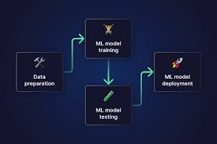

Data Analyst | Power Platform & AI Automation Specialist | Building Intelligent Business Systems
Founder — Need Greater Success (NGS)
Services
Services available for small businesses, nonprofits, and teams looking to improve workflows, automate processes, and gain better visibility into their operations.
Available for freelance projects and consulting engagements.
🔁
Workflow Automation
Design and build business process automations using Microsoft Power Automate, SharePoint, and Power Apps to reduce manual work and improve efficiency.
📊
Dashboards & Reporting
Create clear, decision-ready dashboards and reporting solutions using Power BI, Tableau, or custom reporting tools to help teams monitor performance and uncover insights.
🧠
AI-Enabled Business Systems
Develop practical solutions that combine automation, analytics, and AI tools to support smarter workflows and scalable operations.
Featured Projects
Selected analytics and machine learning projects demonstrating data preparation, modeling, visualization, and deployment skills.
⚙️
ML Pipeline with FastAPI
End-to-end deployment of a machine learning classifier with FastAPI & MLflow.
PythonFastAPIMLflowScikit-learn
View Project
👥
Customer Segmentation
Identified key customer groups using PCA and KMeans, then visualized insights in Tableau to support targeted marketing strategies.
PythonPCAKMeansTableau
View Project
📊
YouTube Data Dashboard
Interactive Tableau visualizations analyzing engagement trends in video content.
PythonTableauData PrepAnalytics
View Project
Automation & AI Solutions
Selected business automation and workflow solutions designed using Microsoft Power Platform and related tools. Some examples are generalized to protect client privacy.
🧑💼
Intern Performance Review System
Built a custom Power Apps solution to streamline intern evaluations, centralize review data, and support HR reporting workflows.
Power AppsSharePointPower AutomateExcel
View Project
📈
HR Review Dashboard
Created a dashboard experience for filtering, reviewing, and exporting employee or intern review data for HR and management use.
Power AppsSharePointDashboard Design
View Project
🔁
Power Automate Export Workflow
Designed an automated workflow to export review data and distribute reports more efficiently using Microsoft tools.
Power AutomateExcelSharePointWorkflow Automation
View Project
ML Pipeline with FastAPI

Objective: Predict whether a person's income exceeds $50K using U.S. Census data.
Overview: This project demonstrates the development and deployment of a scalable machine learning pipeline using FastAPI and MLflow. It includes preprocessing, model training with scikit-learn, REST API development, and model tracking for reproducibility and version control.
Key Features:
Used FastAPI to serve a trained classification model via RESTful endpoints
Implemented MLflow to track experiments, parameters, and metrics
Built a reusable and scalable pipeline structure with clear modularization
Used GitHub Actions for CI/CD automation and testing
Challenges Overcome: Addressed dependency conflicts and ensured consistent model versioning using MLflow’s model registry and artifact logging. Configured GitHub Actions to automatically run tests and linting for deployment readiness.
Objective: Discover distinct customer groups within demographic and purchasing data to support targeted marketing and personalized customer engagement strategies.
Overview: This project leverages unsupervised machine learning to identify natural customer segments. Through a structured pipeline—data preprocessing, dimensionality reduction using Principal Component Analysis (PCA), and clustering with KMeans—we uncovered meaningful groupings within the data. Results were visualized and explored using an interactive Tableau dashboard to extract business-focused insights.
Key Features:
Cleaned and prepared data with feature engineering, missing value imputation, and categorical encoding
Reduced dimensionality using PCA to retain key variance across features
Applied KMeans Clustering, optimizing cluster number using silhouette scores
Interpreted clusters to support marketing strategy, loyalty insights, and product targeting
Challenges Overcome:
Addressed complex preprocessing needs for mixed-type data
Tuned the number of clusters using elbow method and silhouette analysis
Translated raw clustering outputs into clear business insights for stakeholders
Objective: Analyze YouTube trending videos data to uncover insights on engagement patterns, tag popularity, and content performance over time.
Overview: This project combines Python-based data preprocessing with Tableau Public dashboard design. The dataset was cleaned and enhanced with categorical mappings, tag parsing, and engagement calculations. The resulting visualizations help content creators and marketers understand trends in video performance and audience interaction.
Key Features:
Preprocessed YouTube data using Python: cleaned dates, fixed encoding, mapped categories, and parsed tags
Calculated metrics like Engagement Score (likes + comments per view)
Created interactive dashboards in Tableau to visualize tag trends, top-performing channels, and monthly engagement changes
Explored relationships between video tags and viewer response over time
Challenges Overcome: Managed noisy and inconsistent tag data, performed string parsing for tag frequency, and structured calculated fields to support dynamic Tableau filtering.
Objective: Streamline how managers submit intern evaluations and how HR tracks performance data across departments.
Overview: I designed and developed a custom Microsoft Power Apps solution supported by SharePoint and Power Automate to digitize the intern review process. The system replaced manual review handling with a centralized workflow that improved consistency, reporting, and data visibility.
Key Features:
Structured manager review submission form
Centralized SharePoint data storage
Status tracking and review management
HR-friendly dashboard and filtering workflow
Export support for reporting and analysis
Technologies Used: Power Apps, SharePoint Lists, Power Automate, Excel
Outcome: The solution improved review consistency, reduced manual effort, and made performance data easier to track and report.
This portfolio example is presented using sample data and a generalized description to respect client confidentiality.